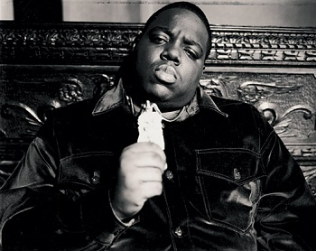
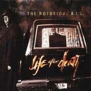

Biggie Smalls
Christopher George Latore Wallace (May 21, 1972 – March 9, 1997), known professionally as The Notorious B.I.G., Biggie Smalls, or Biggie, was an American rapper. He is considered by many to be one of the greatest rappers of all time. Wallace was raised in the Brooklyn borough of New York City. His debut album Ready to Die (1994) made him a central figure in East Coast hip hop, and increased New York City's visibility in the genre at a time when West Coast hip hop dominated the mainstream. The following year, Wallace led Junior M.A.F.I.A. to chart success, a protégé group composed of his childhood friends. In 1996, while recording his second album, Wallace was heavily involved in the growing East Coast–West Coast hip hop feud. Wallace was murdered by an unknown assailant in a drive-by shooting in Los Angeles on March 9, 1997. His second album, Life After Death (1997), released sixteen days later, rose to number one on the U.S. album charts. In 2000, it became one of the few hip-hop albums to be certified Diamond. Wallace was noted for his "loose, easy flow", dark semi-autobiographical lyrics, and storytelling, which focused on crime and hardship. Three more albums have been released since his death, and he has certified sales of over 17 million records in the United States, including 13.4 million albums
| Top Tracks | Audio |
|---|---|
| 10CrackCommandments(LifeAfterDeath) | |
| Hypnotize(LifeAfterDeath) | |
| Juicy(ReadyToDie) |
| Albums |
|---|
 "ReadyToDie" "ReadyToDie" |
| "LifeAfterDeath" |